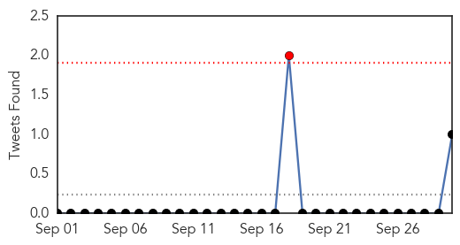

30 Day Trends
Web: 13 alerts, 10 warnings
Twitter: 0 alerts, 0 warnings
Top Articles:
- 0.997
- State health officials confirm two more cases of enterovirus D68
- 0.993
- Time Is Now For Flu Shots
- 0.971
- Updated: Flu shots beset by delays
- 0.962
- Vaccinate now to fight flu
- 0.956
- CDC notes more EV-D68, sees link to earlier polio-like illness
- 0.907
- Flu shots in pregnancy protect babies from being born too soon, Canadian studies show
- 0.883
- Montgomery County Health Department holding flu vaccine clinics
- 0.877
- Enterovirus may be hitting its peak
- 0.872
- Protect yourself against flu, other illnesses
- 0.732
- Atlantic General offers free flu clinics
- 0.674
- American Association of Kidney Patients Joins Fresenius Medical Care in Advocating for Vaccinations of All CKD Patients Against Flu This Season
- 0.636
- Alere Webinar Spotlights Optimal Flu Diagnostics to Keep Your Lab Ahead of the Curve
- 0.505
- A parent's worst nightmare: When a fever turns out to be cancer
Top Tweets:
- 0.626
- Flu Tip: Did you know that you can get the flu in the summer? The influenza virus is present in the community all year round.
Web/News Articles

Tweets
Article Locations

Article Confidences